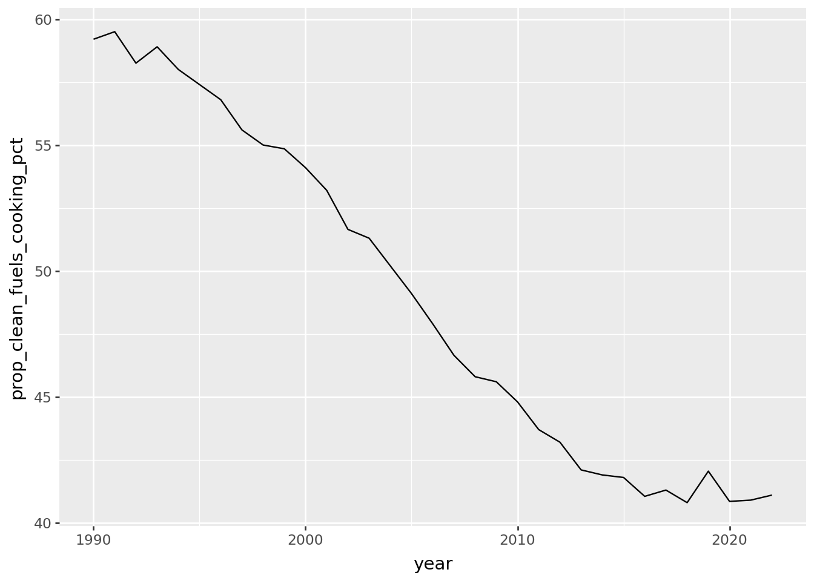
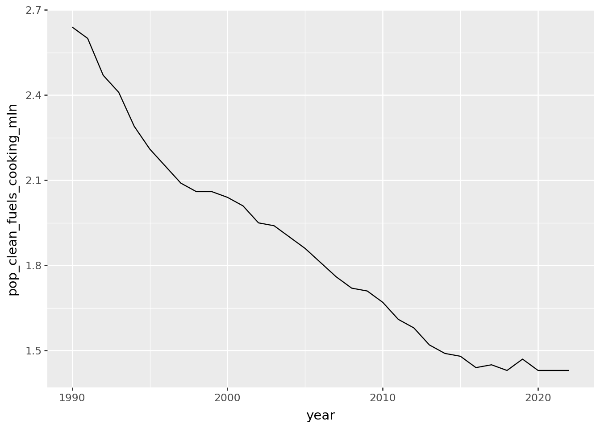
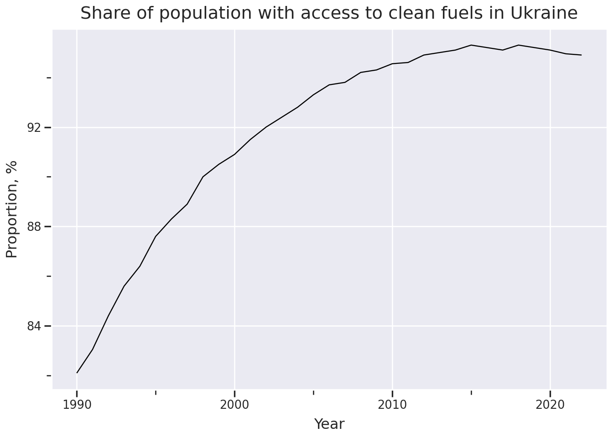
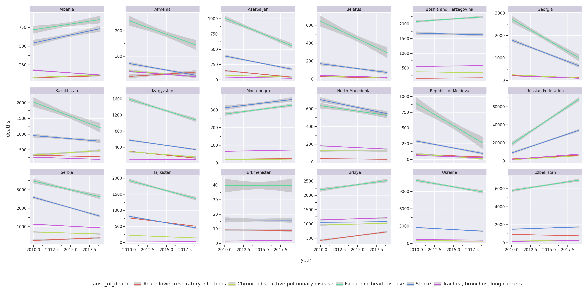
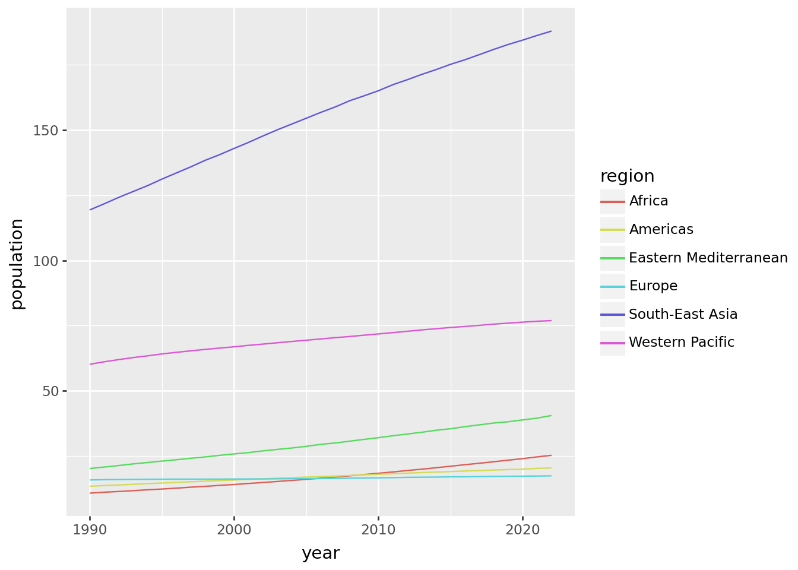
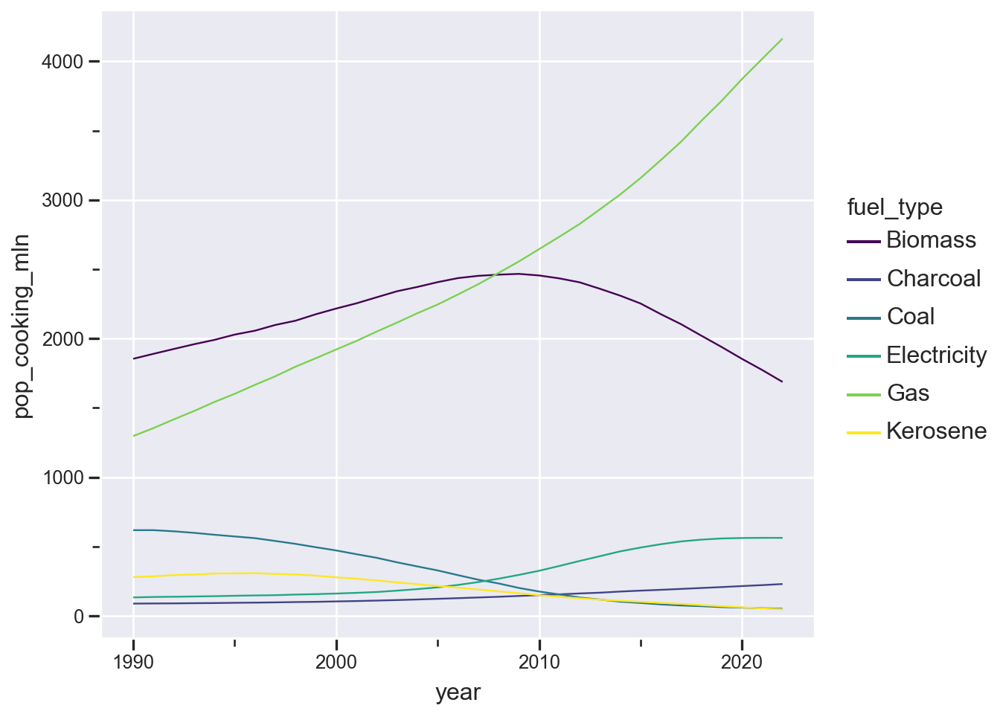
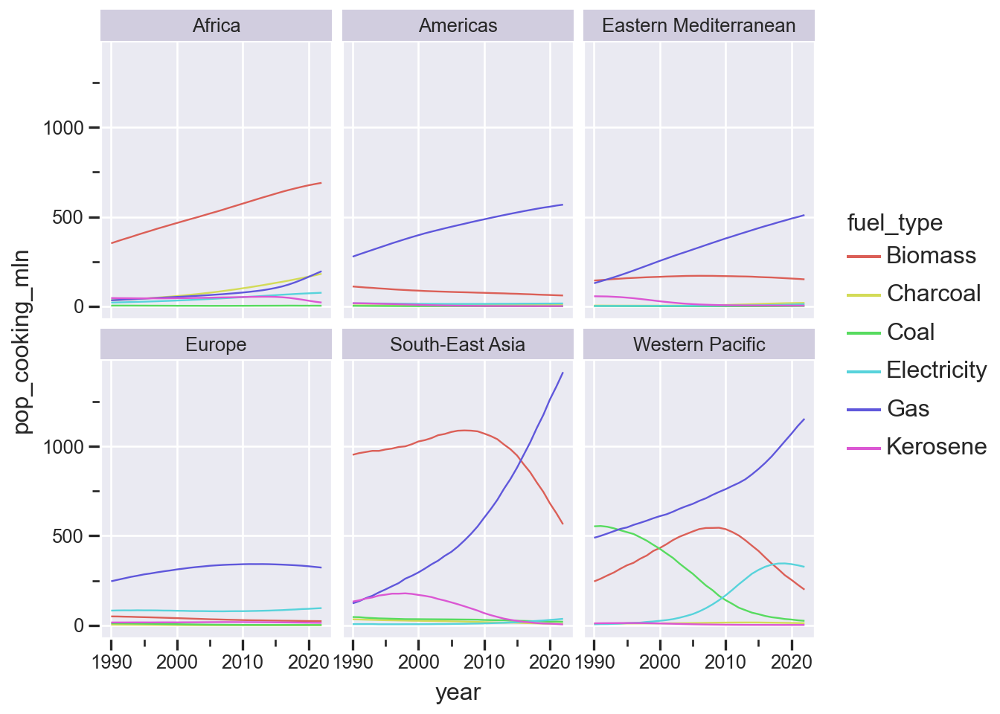

import polars as pl
import polars.selectors as cs
from plotnine import *
from great_tables import GTWrangling
Data
Welcome to the module on data wrangling! In the last lesson, we explored a small, but exciting gapminder dataset, and created quite a few visualizations with it. But in real-world scenarios, datasets are often much larger. This brings new challenges, like focusing on specific subsets of data—perhaps observations from a single time period or a selection of variables related to a particular phenomenon.
In this module, we’ll learn how to subset data and create meaningful summaries that provide a high-level overview of trends or differences between groups. Summarized data is often presented in tables, so we’ll also introduce a package for creating clear, professional-looking tables.
Most importantly, we’ll dive into the blazingly fast Polars package for data manipulation. As I mentioned earlier, Polars is powered by Rust, a high-performance programming language. Its core functionality is exposed to Python but can also be accessed from other languages. This means the data wrangling skills you gain here will be transferable beyond Python.
But first, let’s load the necessary packages for this module. In Python, it’s common to use the alias pl for Polars. We’ll also use a submodule called polars.selectors, aliasing it as cs — don’t worry, we’ll cover selectors in more detail soon. We’ll also import everything from Plotnine for data visualization and bring in the main function from the great_tables package for generating beautifully looking tables.
Here’s the setup code. Place it in its own cell in your notebook and run it:
Now, let’s explore our dataset. We’ll be looking at the WHO data about household pollution curated by the Our World In Data website.
Household air pollution is primarily caused by burning polluting fuels like wood, animal dung, charcoal, agricultural waste, and kerosene in open fires or inefficient stoves. Globally, 2.1 billion people rely on these fuels for cooking, heating, and lighting. The poor combustion of these fuels leads to numerous health issues, such as pneumonia in children, and chronic diseases like obstructive pulmonary disease, lung cancer, stroke, and cardiovascular problems in adults.
This is a complex problem, and like many complex problems, it can be examined from different perspectives. We have three datasets to work with:
- Causes of death linked to household pollution
- Types of fuel used for cooking in various countries
- Proportion of the population with access to clean cooking fuels
Each dataset offers a unique angle on this issue. Let’s dive in and start exploring!
Part I. Basics
In this section, we’ll start working with the datasets about household air pollution. These datasets are stored as comma-separated values, or CSV files. CSV is a simple text format often used for storing tabular data. Think of it as a stripped-down version of Excel—just the data, no formatting or formulas. In fact, you can even open CSV files directly in Excel if you want to take a look at them.
We’ve prepared these datasets for you and stored them in the course repository on GitHub. While Polars allows us to read files directly from remote locations, you can also download the files and load them from your local project directory.
Here’s the code to load the three datasets we’ll use:
Indoor air pollution datasets
hhap_deaths = pl.read_csv("hhap/hhap_deaths.csv")
fuel_types = pl.read_csv("hhap/cooking_by_fuel_type.csv")
clean_fuels = pl.read_csv("hhap/clean_fuels_cooking.csv")Let’s break this down. We’re using the read_csv() function from Polars to load the data. This function takes a single mandatory argument: the file path, written as a string in quotes. The equal sign indicates that we assign the content of the file to the variable, listed on the left. The pl.read_csv() returns a data frame. So, from now on, we can simply refer to this variable name whenever we need to access the dataframe which we read fromm the CSV file without needing to re-import it.
Data Overview
To understand the data we’re working with, it’s helpful to preview it in a few ways. For instance, simply typing the name of a dataset—like clean_fuels—will display a preview of the first five and last five rows of the corresponding data frame.
Rows in a data frame are often referred to as observations or records, while columns are known as variables or features. If you want to see more rows than the default preview, you can use the .head() method and specify the number of rows to display:
(clean_fuels
.head(10))
shape: (10, 6)
| region | country_code | country | year | pop_clean_fuels_cooking_mln | prop_clean_fuels_cooking_pct |
|---|---|---|---|---|---|
| str | str | str | i64 | f64 | f64 |
| "Africa" | "SSD" | "South Sudan" | 2022 | 0.0 | 0.0 |
| "Western Pacific" | "NIU" | "Niue" | 2022 | 0.002 | 98.5 |
| "Western Pacific" | "TKL" | "Tokelau" | 2022 | 0.0004 | 28.3 |
| "Western Pacific" | "COK" | "Cook Islands" | 2022 | 0.013 | 72.7 |
| "Western Pacific" | "PLW" | "Palau" | 2022 | 0.007 | 29.45 |
| "Africa" | "STP" | "Sao Tome and Principe" | 2022 | 0.009 | 4.1 |
| "Western Pacific" | "FSM" | "Micronesia (Federated States o… | 2022 | 0.014 | 13.2 |
| "Africa" | "BDI" | "Burundi" | 2022 | 0.013 | 0.1 |
| "Western Pacific" | "NRU" | "Nauru" | 2022 | 0.011 | 100.0 |
| "Western Pacific" | "TUV" | "Tuvalu" | 2022 | 0.009 | 75.2 |
You may have noticed the parentheses around the code block. This lets you write the code across multiple lines without worrying about indentation.
Previewing the first few rows gives you an initial sense of the dataset’s structure and content. If you’re curious about the last few rows, there’s also a .tail() method you can use in a similar way.
For a broader overview of your data, you can use the .describe() method:
(clean_fuels
.describe())
shape: (9, 7)
| statistic | region | country_code | country | year | pop_clean_fuels_cooking_mln | prop_clean_fuels_cooking_pct |
|---|---|---|---|---|---|---|
| str | str | str | str | f64 | f64 | f64 |
| "count" | "6402" | "6402" | "6402" | 6402.0 | 6402.0 | 6402.0 |
| "null_count" | "0" | "0" | "0" | 0.0 | 0.0 | 0.0 |
| "mean" | null | null | null | 2006.0 | 19.29797 | 61.080069 |
| "std" | null | null | null | 9.522648 | 73.100935 | 39.952764 |
| "min" | "Africa" | "AFG" | "Afghanistan" | 1990.0 | 0.0 | 0.0 |
| "25%" | null | null | null | 1998.0 | 0.23 | 16.6 |
| "50%" | null | null | null | 2006.0 | 2.24 | 78.0 |
| "75%" | null | null | null | 2014.0 | 10.24 | 100.0 |
| "max" | "Western Pacific" | "ZWE" | "Zimbabwe" | 2022.0 | 1257.0 | 100.0 |
The .describe() method provides a statistical summary of numerical columns, including metrics like the mean, standard deviation, minimum, maximum, and various quantiles. It’s especially useful for large datasets when you want to quickly understand key metrics.
One thing to note: if a column contains missing values, Polars will display these as null. Polars treats missing values as “contagious,” so any operation involving them will also result in missing values in the output. This behavior applies to all statistical operations. We’ll see more examples of this later.
Both .head() and .describe() return a data frame, which means you can chain these operations together. Method chaining is a powerful coding style that helps you write clean, readable, and maintainable code.
Here’s the first challenge for you: combine the functions you learned so far to create a method chain:
Challenge
- Take first 25 records of clean_fuels data frame and calculate summary statistical summary
- Compute statistical summary of the whole data and then present only quantile summaries of each column. The quantiles include minimum, maximum as well as the 25th, 50th and 75th quantile.
(clean_fuels
.head(25)
.describe())
(clean_fuels
.describe()
.tail(5))
shape: (5, 7)
| statistic | region | country_code | country | year | pop_clean_fuels_cooking_mln | prop_clean_fuels_cooking_pct |
|---|---|---|---|---|---|---|
| str | str | str | str | f64 | f64 | f64 |
| "min" | "Africa" | "AFG" | "Afghanistan" | 1990.0 | 0.0 | 0.0 |
| "25%" | null | null | null | 1998.0 | 0.23 | 16.6 |
| "50%" | null | null | null | 2006.0 | 2.24 | 78.0 |
| "75%" | null | null | null | 2014.0 | 10.24 | 100.0 |
| "max" | "Western Pacific" | "ZWE" | "Zimbabwe" | 2022.0 | 1257.0 | 100.0 |
Sometimes, datasets have many columns, making it difficult to gain a full overview using methods like head() or describe(). For these cases, Polars provides a particularly useful method called glimpse().
When you use glimpse(), the dataset’s structure is displayed horizontally. Each variable is listed as a row, making it easier to scan through all columns, even if you’re working with a limited screen space. Here’s how it looks in action:
(clean_fuels
.glimpse())Rows: 6402
Columns: 6
$ region <str> 'Africa', 'Western Pacific', 'Western Pacific', 'Western Pacific', 'Western Pacific', 'Africa', 'Western Pacific', 'Africa', 'Western Pacific', 'Western Pacific'
$ country_code <str> 'SSD', 'NIU', 'TKL', 'COK', 'PLW', 'STP', 'FSM', 'BDI', 'NRU', 'TUV'
$ country <str> 'South Sudan', 'Niue', 'Tokelau', 'Cook Islands', 'Palau', 'Sao Tome and Principe', 'Micronesia (Federated States of)', 'Burundi', 'Nauru', 'Tuvalu'
$ year <i64> 2022, 2022, 2022, 2022, 2022, 2022, 2022, 2022, 2022, 2022
$ pop_clean_fuels_cooking_mln <f64> 0.0, 0.002, 0.0004, 0.013, 0.007, 0.009, 0.014, 0.013, 0.011, 0.009
$ prop_clean_fuels_cooking_pct <f64> 0.0, 98.5, 28.3, 72.7, 29.45, 4.1, 13.2, 0.1, 100.0, 75.2
Now, here’s a question for you what happens if you try to use glimpse() in a method chain?
Question
Can you chain the operation head() after calling glimpse()? What do you think the output will be?
The answer is: no, you cannot. glimpse(), does not return you a data frame. Instead, the output of glimpse() is the text printout meant solely for viewing. No further operations can be applied to it. If you attempt to chain additional methods, you’ll encounter an error. Give it a try if you want! Polars will throw an error saying that the head() method cannot be applied to a NoneType, which is the type of output glimpse() returns.
By understanding how to use head(), tail(), describe(), and glimpse(), you have powerful tools at your disposal to explore and familiarize yourself with any dataset before diving deeper into your analysis.
select/drop
One of the most common tasks in data analysis is selecting specific variables or columns from a dataset. Let’s start by pulling out the country information from the clean_fuels dataset. Pause the video for a moment and try running this code:
(clean_fuels
.select(pl.col("country")))
shape: (6_402, 1)
| country |
|---|
| str |
| "South Sudan" |
| "Niue" |
| "Tokelau" |
| "Cook Islands" |
| "Palau" |
| … |
| "Austria" |
| "Germany" |
| "Sweden" |
| "Portugal" |
| "India" |
Here, we’re using the select() method to isolate a column. Notice how the column name is wrapped in the pl.col() function. This wrapper explicitly tells Polars that we’re referring to a column in the dataframe.
But here’s something cool—you can skip the pl.col() wrapper in certain cases! For example, this code:
(clean_fuels
.select("country_code", "country"))
shape: (6_402, 2)
| country_code | country |
|---|---|
| str | str |
| "SSD" | "South Sudan" |
| "NIU" | "Niue" |
| "TKL" | "Tokelau" |
| "COK" | "Cook Islands" |
| "PLW" | "Palau" |
| … | … |
| "AUT" | "Austria" |
| "DEU" | "Germany" |
| "SWE" | "Sweden" |
| "PRT" | "Portugal" |
| "IND" | "India" |
…does the exact same thing as this:
(clean_fuels
.select(pl.col("country_code"), pl.col("country")))
shape: (6_402, 2)
| country_code | country |
|---|---|
| str | str |
| "SSD" | "South Sudan" |
| "NIU" | "Niue" |
| "TKL" | "Tokelau" |
| "COK" | "Cook Islands" |
| "PLW" | "Palau" |
| … | … |
| "AUT" | "Austria" |
| "DEU" | "Germany" |
| "SWE" | "Sweden" |
| "PRT" | "Portugal" |
| "IND" | "India" |
Pretty neat, right? The select() method can directly interpret strings as column names, making your code a little cleaner and quicker to write.
When you wrap a column name in pl.col(), you’re creating an expression. An expression is like an instruction—it doesn’t do anything on its own. For example, if you run this code:
pl.col("country_code")
col("country_code")
…nothing happens. It just returns something called an “unevaluated expression”. But when you evaluate that expression in the context of a dataset, it turns into something powerful. For instance:
(clean_fuels
.select(pl.col("country_code")))
shape: (6_402, 1)
| country_code |
|---|
| str |
| "SSD" |
| "NIU" |
| "TKL" |
| "COK" |
| "PLW" |
| … |
| "AUT" |
| "DEU" |
| "SWE" |
| "PRT" |
| "IND" |
Here, the select() method acts as an evaluation environment, turning the pl.col() expression into actual data. select() is one of the several methods in Polars that can evaluate expressions. While select() is highly versatile and can do other things as well, for now, we’ll focus on its simplest use case: extracting columns from a data frame.
The pl.col() wrapper is super flexible, and it’s going to be central as we build more advanced expressions in Polars. For instance, you can use pl.col() to refer to multiple columns simultaneously:
(clean_fuels
.select(pl.col("country_code", "country")))
shape: (6_402, 2)
| country_code | country |
|---|---|
| str | str |
| "SSD" | "South Sudan" |
| "NIU" | "Niue" |
| "TKL" | "Tokelau" |
| "COK" | "Cook Islands" |
| "PLW" | "Palau" |
| … | … |
| "AUT" | "Austria" |
| "DEU" | "Germany" |
| "SWE" | "Sweden" |
| "PRT" | "Portugal" |
| "IND" | "India" |
Sometimes, typing out long column names can feel like a chore, especially when you’re working with many columns. But don’t worry—Polars makes it easy to select columns by their position in the dataset. For example, this code selects the second and third columns by their numerical index:
(clean_fuels
.select(pl.nth(1,2)))
shape: (6_402, 2)
| country_code | country |
|---|---|
| str | str |
| "SSD" | "South Sudan" |
| "NIU" | "Niue" |
| "TKL" | "Tokelau" |
| "COK" | "Cook Islands" |
| "PLW" | "Palau" |
| … | … |
| "AUT" | "Austria" |
| "DEU" | "Germany" |
| "SWE" | "Sweden" |
| "PRT" | "Portugal" |
| "IND" | "India" |
Watch out column indices in Polars are 0-based. That means the first column is index 0, the second column is index 1, and so on.
What about negative numbers? They’re a handy shortcut for selecting columns from the end of the dataset. For instance, -1 refers to the last column, and this code will select the first and last columns:
(clean_fuels
.select(pl.nth(0, -1)))
shape: (6_402, 2)
| region | prop_clean_fuels_cooking_pct |
|---|---|
| str | f64 |
| "Africa" | 0.0 |
| "Western Pacific" | 98.5 |
| "Western Pacific" | 28.3 |
| "Western Pacific" | 72.7 |
| "Western Pacific" | 29.45 |
| … | … |
| "Europe" | 100.0 |
| "Europe" | 100.0 |
| "Europe" | 100.0 |
| "Europe" | 100.0 |
| "South-East Asia" | 11.1 |
A note of caution: selecting columns by the order of their occurence can be risky. If your dataset’s structure changes, you might accidentally select the wrong columns. So, use the nth() function sparingly.
Now, let’s talk about the opposite of select()—the drop() method. The drop() method removes specific columns from your dataset, leaving everything else intact. For example:
(clean_fuels
.drop(pl.col("country"), pl.col("region")))
shape: (6_402, 4)
| country_code | year | pop_clean_fuels_cooking_mln | prop_clean_fuels_cooking_pct |
|---|---|---|---|
| str | i64 | f64 | f64 |
| "SSD" | 2022 | 0.0 | 0.0 |
| "NIU" | 2022 | 0.002 | 98.5 |
| "TKL" | 2022 | 0.0004 | 28.3 |
| "COK" | 2022 | 0.013 | 72.7 |
| "PLW" | 2022 | 0.007 | 29.45 |
| … | … | … | … |
| "AUT" | 1990 | 7.72 | 100.0 |
| "DEU" | 1990 | 79.12 | 100.0 |
| "SWE" | 1990 | 8.57 | 100.0 |
| "PRT" | 1990 | 9.95 | 100.0 |
| "IND" | 1990 | 96.58 | 11.1 |
Dopping is equivalent to selecting all columns except the ones you want to exclude. Here’s how could would write it using in terms of selection:
(clean_fuels
.select(pl.all().exclude("country", "region")))
shape: (6_402, 4)
| country_code | year | pop_clean_fuels_cooking_mln | prop_clean_fuels_cooking_pct |
|---|---|---|---|
| str | i64 | f64 | f64 |
| "SSD" | 2022 | 0.0 | 0.0 |
| "NIU" | 2022 | 0.002 | 98.5 |
| "TKL" | 2022 | 0.0004 | 28.3 |
| "COK" | 2022 | 0.013 | 72.7 |
| "PLW" | 2022 | 0.007 | 29.45 |
| … | … | … | … |
| "AUT" | 1990 | 7.72 | 100.0 |
| "DEU" | 1990 | 79.12 | 100.0 |
| "SWE" | 1990 | 8.57 | 100.0 |
| "PRT" | 1990 | 9.95 | 100.0 |
| "IND" | 1990 | 96.58 | 11.1 |
The pl.all() function refers to all columns, and the exclude() method lets you refine the selection by removing specific ones.The pl.all() function refers to all columns, and the exclude() method lets you refine the selection by removing specific ones.
A quick reminder—dropping columns doesn’t modify your original dataset. It only affects the result of that query. Unless you explicitly overwrite the original dataframe, everything stays the same. So feel free to experiment!
Now it’s your turn. Select the columns related to population and the proportion of the population with access to clean fuels. Try using both selection by name and by index, as well as dropping the ones you dont need.
Challenge
Select the columns related to population and the proportion of population with access to clean fuels from the clean_fuels dataset.
Pause the video and try couple of different ways of selecting these columns.
(clean_fuels
.select(pl.col("pop_clean_fuels_cooking_mln"), pl.col("prop_clean_fuels_cooking_pct")))
(clean_fuels
.select(pl.nth(-2,-1)))
(clean_fuels
.drop("region", "country_code", "country", "year"))
shape: (6_402, 2)
| pop_clean_fuels_cooking_mln | prop_clean_fuels_cooking_pct |
|---|---|
| f64 | f64 |
| 0.0 | 0.0 |
| 0.002 | 98.5 |
| 0.0004 | 28.3 |
| 0.013 | 72.7 |
| 0.007 | 29.45 |
| … | … |
| 7.72 | 100.0 |
| 79.12 | 100.0 |
| 8.57 | 100.0 |
| 9.95 | 100.0 |
| 96.58 | 11.1 |
Got it? Great! Both approaches—selecting specific columns or dropping the ones you don’t need—give you the same result. Expressions like these make your analysis more dynamic and efficient, so you can quickly adapt to different datasets or scenarios.
selectors
Selecting columns is such a common task that Polars has a dedicated module for it—polars.selectors. This module provides a collection of methods specifically designed to simplify column selection. These are often aliased as cs for convenience. Have a look at the polars documentation for selectors. To get started, make sure you import the selectors module:
import polars.selectors as csAmong the most useful selectors are, of course, selectors by name and column index (for which we might not really need selectors, because those can be picked up with pl.col() and pl.nth()).
(clean_fuels
.select(cs.by_name("region", "country"))
)
# note python is 0-based
(clean_fuels
.select(cs.by_index(0,2,5))
)
shape: (6_402, 3)
| region | country | prop_clean_fuels_cooking_pct |
|---|---|---|
| str | str | f64 |
| "Africa" | "South Sudan" | 0.0 |
| "Western Pacific" | "Niue" | 98.5 |
| "Western Pacific" | "Tokelau" | 28.3 |
| "Western Pacific" | "Cook Islands" | 72.7 |
| "Western Pacific" | "Palau" | 29.45 |
| … | … | … |
| "Europe" | "Austria" | 100.0 |
| "Europe" | "Germany" | 100.0 |
| "Europe" | "Sweden" | 100.0 |
| "Europe" | "Portugal" | 100.0 |
| "South-East Asia" | "India" | 11.1 |
Selecting first and last columns are so common, there are useful shortthands cs.first() and cs.last(). To select all columns other than the one you specified, you can use the tilde ~ operator. Tilde operator works with all methods in cs. module and negates the selection. For example ~cs.last() refers to all columns other than the last one.
Selectors can target columns based on their data types! For example, cs.numeric() picks all numeric columns. And if you want non-numeric columns, just negate it with ~.
And now it is your turn. Try selecting first, everyhing other than the first, as well as all non-numeric columns. Use selector class for this. Pause the video and give it a try!
Challenge
Use polars.selectors aliased as cs to select - first column - everyhing other than first column - all non-numeric columns
(clean_fuels
.select(cs.first())
)
# not first
(clean_fuels
.select(~cs.first())
)
# not numeric
(clean_fuels
.select(~cs.numeric())
)
shape: (6_402, 3)
| region | country_code | country |
|---|---|---|
| str | str | str |
| "Africa" | "SSD" | "South Sudan" |
| "Western Pacific" | "NIU" | "Niue" |
| "Western Pacific" | "TKL" | "Tokelau" |
| "Western Pacific" | "COK" | "Cook Islands" |
| "Western Pacific" | "PLW" | "Palau" |
| … | … | … |
| "Europe" | "AUT" | "Austria" |
| "Europe" | "DEU" | "Germany" |
| "Europe" | "SWE" | "Sweden" |
| "Europe" | "PRT" | "Portugal" |
| "South-East Asia" | "IND" | "India" |
Fantastic work! With a wide menu of selector methods, plus column and index-based expressions like pl.col() and pl.nth(), Polars gives you incredible flexibility in working with your data. These tools will become invaluable as we move into crafting more complex expressions.
Stay tuned—there’s a lot more to explore!
Filter
Now let’s talk about filtering data—an essential part of data analysis. In Polars, filtering allows you to subset your dataset based on logical conditions, and it’s powered by the magic of expressions. Logical operations are one of the simplest and most common use cases for expressions. For example, you can compare every value in the region column to the string “Europe”. If there’s a match, Polars returns True; otherwise, it returns False.
Let’s see how this works in code:
(clean_fuels
.filter(pl.col("region")=="Europe")
)
shape: (1_749, 6)
| region | country_code | country | year | pop_clean_fuels_cooking_mln | prop_clean_fuels_cooking_pct |
|---|---|---|---|---|---|
| str | str | str | i64 | f64 | f64 |
| "Europe" | "SMR" | "San Marino" | 2022 | 0.034 | 100.0 |
| "Europe" | "MCO" | "Monaco" | 2022 | 0.04 | 100.0 |
| "Europe" | "FRO" | "Faroe Islands" | 2022 | 0.05 | 100.0 |
| "Europe" | "AND" | "Andorra" | 2022 | 0.077 | 100.0 |
| "Europe" | "ISL" | "Iceland" | 2022 | 0.35 | 100.0 |
| … | … | … | … | … | … |
| "Europe" | "BLR" | "Belarus" | 1990 | 7.48 | 73.2 |
| "Europe" | "AUT" | "Austria" | 1990 | 7.72 | 100.0 |
| "Europe" | "DEU" | "Germany" | 1990 | 79.12 | 100.0 |
| "Europe" | "SWE" | "Sweden" | 1990 | 8.57 | 100.0 |
| "Europe" | "PRT" | "Portugal" | 1990 | 9.95 | 100.0 |
Here, the filter() method applies the logical condition, and only rows where the region is “Europe” are included in the result. Notice that for exact comparisons, we use the double equals sign ==. Similarly, for inequalities, we can use operators like <=, >=, <, or >. Not equal is spelled out as !=.
But filtering doesn’t stop there—you can combine multiple conditions to create more complex filters.
Here’s a challenge for you. Can you find all the countries in Europe in the year 2022 where the majority of the population lacks access to clean fuels for cooking? Take a moment to write this expression. Pause the video if you need to.
Challenge
Were there any countries in Europe in the year 2022 where the majority of people lack access to clean fuel for cooking.
(clean_fuels
.filter(
pl.col("region")=="Europe",
pl.col("year")==2022,
pl.col("prop_clean_fuels_cooking_pct")<50
)
)
shape: (1, 6)
| region | country_code | country | year | pop_clean_fuels_cooking_mln | prop_clean_fuels_cooking_pct |
|---|---|---|---|---|---|
| str | str | str | i64 | f64 | f64 |
| "Europe" | "BIH" | "Bosnia and Herzegovina" | 2022 | 1.43 | 41.1 |
What did you get? Oh, wow! Over half the population of Bosnia still lacks access to clean fuels for cooking. That’s a powerful insight.
Now let’s zoom in on Bosnia to better understand its data. Bosnia’s country code is “BIH”, but you can also filter by country name if you prefer.
(
clean_fuels
.filter(pl.col("country_code")=="BIH")
)
shape: (33, 6)
| region | country_code | country | year | pop_clean_fuels_cooking_mln | prop_clean_fuels_cooking_pct |
|---|---|---|---|---|---|
| str | str | str | i64 | f64 | f64 |
| "Europe" | "BIH" | "Bosnia and Herzegovina" | 2022 | 1.43 | 41.1 |
| "Europe" | "BIH" | "Bosnia and Herzegovina" | 2021 | 1.43 | 40.9 |
| "Europe" | "BIH" | "Bosnia and Herzegovina" | 2020 | 1.43 | 40.85 |
| "Europe" | "BIH" | "Bosnia and Herzegovina" | 2019 | 1.47 | 42.05 |
| "Europe" | "BIH" | "Bosnia and Herzegovina" | 2018 | 1.43 | 40.8 |
| … | … | … | … | … | … |
| "Europe" | "BIH" | "Bosnia and Herzegovina" | 1994 | 2.29 | 58.0 |
| "Europe" | "BIH" | "Bosnia and Herzegovina" | 1993 | 2.41 | 58.9 |
| "Europe" | "BIH" | "Bosnia and Herzegovina" | 1992 | 2.47 | 58.25 |
| "Europe" | "BIH" | "Bosnia and Herzegovina" | 1991 | 2.6 | 59.5 |
| "Europe" | "BIH" | "Bosnia and Herzegovina" | 1990 | 2.64 | 59.2 |
We are interested in tracking how the proportion of the population with access to clean fuels for cooking has changed over the years. To do this, we’ll place the year on the x-axis and the population proportion on the y-axis.
If you remember from the Plotnine module, the dataset goes into the first argument of the ggplot function.
Here’s one way to do this:
(
ggplot(
clean_fuels
.filter(pl.col("country_code")=="BIH")
) +
geom_line(mapping=aes(x="year", y="prop_clean_fuels_cooking_pct"))
)
This works, but the code feels cluttered. It’s not immediately clear where the dataset comes from.
Let’s clean this up using the .pipe() method.
(clean_fuels
.filter(pl.col("country_code")=="BIH")
.pipe(ggplot) +
geom_line(aes(x="year", y="pop_clean_fuels_cooking_mln"))
)
Here, the .pipe() method passes the filtered clean_fuels dataset into the ggplot function as its first argument. This keeps the code clean and modular. Everything after .pipe(ggplot) is Plotnine-specific code.
Nice!
But what if you’re not sure how a country’s name is spelled in the dataset? For example, is it “Czech Republic” or just “Czechia”?
In this case, you can use partial string matching to find it.
(clean_fuels
.filter(pl.col("country").str.starts_with("Cz")))
shape: (33, 6)
| region | country_code | country | year | pop_clean_fuels_cooking_mln | prop_clean_fuels_cooking_pct |
|---|---|---|---|---|---|
| str | str | str | i64 | f64 | f64 |
| "Europe" | "CZE" | "Czechia" | 2022 | 10.63 | 100.0 |
| "Europe" | "CZE" | "Czechia" | 2021 | 10.63 | 100.0 |
| "Europe" | "CZE" | "Czechia" | 2020 | 10.63 | 100.0 |
| "Europe" | "CZE" | "Czechia" | 2019 | 10.63 | 100.0 |
| "Europe" | "CZE" | "Czechia" | 2018 | 10.63 | 100.0 |
| … | … | … | … | … | … |
| "Europe" | "CZE" | "Czechia" | 1994 | 10.36 | 100.0 |
| "Europe" | "CZE" | "Czechia" | 1993 | 10.36 | 100.0 |
| "Europe" | "CZE" | "Czechia" | 1992 | 10.35 | 100.0 |
| "Europe" | "CZE" | "Czechia" | 1991 | 10.35 | 100.0 |
| "Europe" | "CZE" | "Czechia" | 1990 | 10.34 | 100.0 |
Here, we use the str.starts_with() method, which checks if strings in the country column start with the letters “Cz.” Ah, there it is—“Czechia”! Polars offers several handy string operations, like:
- str.starts_with()
- str.ends_with()
- str.contains()
You’ll see more of these as we progress, but these three are powerful enough to help you tackle the following challenge.
Filter the data for your country and visualize the proportion of people with access to clean fuels. Once you’re happy with your data subset, use ggplot and everything you’ve learned about Plotnine to create a polished visualization.
Challenge
Visualize the proportion of people with access to clean fuels in your country
(clean_fuels
.filter(pl.col("country").str.starts_with("Ukr"))
.pipe(ggplot)
+ geom_line(aes(x="year", y="prop_clean_fuels_cooking_pct"))
)
This looks fantastic! Great work visualizing your country’s data.
In the next section, we’ll explore adding more columns to our dataset and practice advanced subsetting and visualization techniques. Stay tuned!
Let’s apply what we’ve learned about filtering to visualize the causes of death in some European countries.
hhap_deaths
shape: (10_800, 6)
| region | country_code | country | year | cause_of_death | deaths |
|---|---|---|---|---|---|
| str | str | str | i64 | str | f64 |
| "Americas" | "ATG" | "Antigua and Barbuda" | 2010 | "All causes" | 0.0 |
| "Americas" | "ATG" | "Antigua and Barbuda" | 2010 | "Acute lower respiratory infect… | 0.0 |
| "Americas" | "ATG" | "Antigua and Barbuda" | 2010 | "Trachea, bronchus, lung cancer… | 0.0 |
| "Americas" | "ATG" | "Antigua and Barbuda" | 2010 | "Ischaemic heart disease" | 0.0 |
| "Americas" | "ATG" | "Antigua and Barbuda" | 2010 | "Stroke" | 0.0 |
| … | … | … | … | … | … |
| "Americas" | "BOL" | "Bolivia (Plurinational State o… | 2019 | "Trachea, bronchus, lung cancer… | 98.72 |
| "Africa" | "GNB" | "Guinea-Bissau" | 2019 | "Chronic obstructive pulmonary … | 98.88 |
| "Africa" | "CIV" | "Cote d'Ivoire" | 2019 | "Chronic obstructive pulmonary … | 990.6 |
| "Europe" | "TUR" | "Türkiye" | 2019 | "Chronic obstructive pulmonary … | 997.6 |
| "Europe" | "UZB" | "Uzbekistan" | 2019 | "All causes" | 9982.0 |
This dataset contains both summarized and detailed breakdowns of deaths for every country and year. Take a look at the column labeled cause_of_death. When this column says “All causes,” it represents the total deaths for that country and year—a sum of all the other rows.
Let’s zoom in on Bosnia for a single year, say 2010, to understand this better.
(hhap_deaths
.filter(pl.col("country_code")=="BIH",
pl.col("year")==2010)
)
shape: (6, 6)
| region | country_code | country | year | cause_of_death | deaths |
|---|---|---|---|---|---|
| str | str | str | i64 | str | f64 |
| "Europe" | "BIH" | "Bosnia and Herzegovina" | 2010 | "Acute lower respiratory infect… | 147.2 |
| "Europe" | "BIH" | "Bosnia and Herzegovina" | 2010 | "Stroke" | 1685.0 |
| "Europe" | "BIH" | "Bosnia and Herzegovina" | 2010 | "Ischaemic heart disease" | 2067.0 |
| "Europe" | "BIH" | "Bosnia and Herzegovina" | 2010 | "Chronic obstructive pulmonary … | 365.2 |
| "Europe" | "BIH" | "Bosnia and Herzegovina" | 2010 | "All causes" | 4816.0 |
| "Europe" | "BIH" | "Bosnia and Herzegovina" | 2010 | "Trachea, bronchus, lung cancer… | 551.7 |
One of the rows is labeled “All causes” with 4,816 deaths. This total matches the sum of the individual causes of death. While it’s useful to have the total, it can lead to double counting if we include it in our analysis.
Now let’s expand our view to include all European countries for which we have death data. We’ll exclude the totals and focus on trends for each specific cause of death. Faceting will help us visualize these trends country by country.
(hhap_deaths
.filter(pl.col("region")=="Europe",
pl.col("deaths")>0,
pl.col("cause_of_death")!="All causes")
.pipe(ggplot)+
aes(x="year", y="deaths", color="cause_of_death", group="cause_of_death")+
geom_smooth(method="lm")+
facet_wrap("country", scales="free_y", nrow=2)+
theme(figure_size=(20,10), legend_position="bottom")
)
Most of the trends appear to be decreasing, which is good news. However, even with free y-axis scales for each country, the differences in scale make it hard to compare trends across countries. Look at Moldova! There’s a dramatic improvement in death cases here. Meanwhile, heart- and stroke-related deaths in neighboring Russia are on the rise.
Can we calculate population numbers from our clean_fuels dataset?
mutating(with_columns)
Remember, the clean_fuels dataset tells us both the number of people with access to clean fuels and the proportion of the total population they represent, expressed as a percentage. With this, we can reverse-engineer the total population.
To create new columns, we use the with_columns() method. This method lets us add or modify columns by specifying expressions.
Let’s start by converting the percentage of people with access to clean fuels into a true proportion by dividing it by 100.
(clean_fuels
.with_columns(prop=pl.col("prop_clean_fuels_cooking_pct")/100)
)
shape: (6_402, 7)
| region | country_code | country | year | pop_clean_fuels_cooking_mln | prop_clean_fuels_cooking_pct | prop |
|---|---|---|---|---|---|---|
| str | str | str | i64 | f64 | f64 | f64 |
| "Africa" | "SSD" | "South Sudan" | 2022 | 0.0 | 0.0 | 0.0 |
| "Western Pacific" | "NIU" | "Niue" | 2022 | 0.002 | 98.5 | 0.985 |
| "Western Pacific" | "TKL" | "Tokelau" | 2022 | 0.0004 | 28.3 | 0.283 |
| "Western Pacific" | "COK" | "Cook Islands" | 2022 | 0.013 | 72.7 | 0.727 |
| "Western Pacific" | "PLW" | "Palau" | 2022 | 0.007 | 29.45 | 0.2945 |
| … | … | … | … | … | … | … |
| "Europe" | "AUT" | "Austria" | 1990 | 7.72 | 100.0 | 1.0 |
| "Europe" | "DEU" | "Germany" | 1990 | 79.12 | 100.0 | 1.0 |
| "Europe" | "SWE" | "Sweden" | 1990 | 8.57 | 100.0 | 1.0 |
| "Europe" | "PRT" | "Portugal" | 1990 | 9.95 | 100.0 | 1.0 |
| "South-East Asia" | "IND" | "India" | 1990 | 96.58 | 11.1 | 0.111 |
Here, we create a new column called prop. The expression starts with pl.col(“prop_clean_fuels_cooking_pct”), and then we specify the operation: dividing by 100. Easy enough, right?
Now that we have the true proportion, we can calculate the total population. We’ll divide the population with access to clean fuels by this proportion.
clean_fuels_pop_df=(clean_fuels
.with_columns(prop=pl.col("prop_clean_fuels_cooking_pct")/100)
.with_columns((pl.col("pop_clean_fuels_cooking_mln")/pl.col("prop")).alias("population"))
)Notice that I wrapped the division operation in parentheses to ensure it’s evaluated correctly. I also used the alias() method to specify a name for the new column: population.This code calculates and adds two new columns:
- prop: the true proportion of the population with access to clean fuels.
- population: the estimated total population for each row.
This looks good. Lets assign it to a variable and inspect the updated dataset.
clean_fuels_pop_df.describe()
shape: (9, 9)
| statistic | region | country_code | country | year | pop_clean_fuels_cooking_mln | prop_clean_fuels_cooking_pct | prop | population |
|---|---|---|---|---|---|---|---|---|
| str | str | str | str | f64 | f64 | f64 | f64 | f64 |
| "count" | "6402" | "6402" | "6402" | 6402.0 | 6402.0 | 6402.0 | 6402.0 | 6402.0 |
| "null_count" | "0" | "0" | "0" | 0.0 | 0.0 | 0.0 | 0.0 | 0.0 |
| "mean" | null | null | null | 2006.0 | 19.29797 | 61.080069 | 0.610801 | NaN |
| "std" | null | null | null | 9.522648 | 73.100935 | 39.952764 | 0.399528 | NaN |
| "min" | "Africa" | "AFG" | "Afghanistan" | 1990.0 | 0.0 | 0.0 | 0.0 | 0.001112 |
| "25%" | null | null | null | 1998.0 | 0.23 | 16.6 | 0.166 | 1.305556 |
| "50%" | null | null | null | 2006.0 | 2.24 | 78.0 | 0.78 | 6.833333 |
| "75%" | null | null | null | 2014.0 | 10.24 | 100.0 | 1.0 | 22.727273 |
| "max" | "Western Pacific" | "ZWE" | "Zimbabwe" | 2022.0 | 1257.0 | 100.0 | 1.0 | 1431.66287 |
Oh, look! We’ve got some NaN values in the population column. These appear because we divided by zero wherever the proportion was zero. Division by zero is, understandably, illegal in most places—and in Python, it results in NaN.
NaN, or “Not a Number,” is a special marker for missing or undefined values. It propagates through calculations, which means any further operations on these rows will also result in NaN.
This is why the mean and standard deviation of the population column are also NaN in the summary.
Let’s see how many rows in our dataset contain illegal population estimates. We can use the .is_nan() method, which evaluates whether a column contains NaN values.
(clean_fuels_pop_df
.filter(pl.col("population").is_nan()))
shape: (35, 8)
| region | country_code | country | year | pop_clean_fuels_cooking_mln | prop_clean_fuels_cooking_pct | prop | population |
|---|---|---|---|---|---|---|---|
| str | str | str | i64 | f64 | f64 | f64 | f64 |
| "Africa" | "SSD" | "South Sudan" | 2022 | 0.0 | 0.0 | 0.0 | NaN |
| "Africa" | "SSD" | "South Sudan" | 2021 | 0.0 | 0.0 | 0.0 | NaN |
| "Africa" | "SSD" | "South Sudan" | 2020 | 0.0 | 0.0 | 0.0 | NaN |
| "Africa" | "SSD" | "South Sudan" | 2019 | 0.0 | 0.0 | 0.0 | NaN |
| "Africa" | "SSD" | "South Sudan" | 2018 | 0.0 | 0.0 | 0.0 | NaN |
| … | … | … | … | … | … | … | … |
| "Africa" | "BEN" | "Benin" | 1991 | 0.0 | 0.0 | 0.0 | NaN |
| "Africa" | "SLE" | "Sierra Leone" | 1991 | 0.0 | 0.0 | 0.0 | NaN |
| "Africa" | "TGO" | "Togo" | 1990 | 0.0 | 0.0 | 0.0 | NaN |
| "Africa" | "BEN" | "Benin" | 1990 | 0.0 | 0.0 | 0.0 | NaN |
| "Africa" | "SLE" | "Sierra Leone" | 1990 | 0.0 | 0.0 | 0.0 | NaN |
Uh-oh! 35 rows! Perhaps fuel_types could be a better source of population data?
The fuel_types dataset contains both the proportion of people using a specific cooking fuel and the absolute number of users. Since it includes multiple estimates for each country and year—one for each fuel type—it might give us more opportunities to calculate valid population estimates.
Go ahead and add a population column to the fuel_types dataset. Save the extended data frame under a new name - we will need it later.
Challenge
Add a population estimate to a fuel_types dataset and save it under a new name
fuel_types_pop_df = (fuel_types
.with_columns(population=pl.col("pop_cooking_mln")/pl.col("prop_cooking_pct")*100)
)This looks promising! Let’s have a look at our favorite Bosnia
(fuel_types_pop_df
.filter(pl.col("country").str.starts_with("Bosni"))
)
shape: (198, 8)
| region | country_code | country | year | fuel_type | pop_cooking_mln | prop_cooking_pct | population |
|---|---|---|---|---|---|---|---|
| str | str | str | i64 | str | f64 | f64 | f64 |
| "Europe" | "BIH" | "Bosnia and Herzegovina" | 2022 | "Kerosene" | 0.0 | 0.0 | NaN |
| "Europe" | "BIH" | "Bosnia and Herzegovina" | 2022 | "Coal" | 0.003 | 0.1 | 3.0 |
| "Europe" | "BIH" | "Bosnia and Herzegovina" | 2022 | "Charcoal" | 0.007 | 0.2 | 3.5 |
| "Europe" | "BIH" | "Bosnia and Herzegovina" | 2022 | "Gas" | 0.23 | 6.5 | 3.538462 |
| "Europe" | "BIH" | "Bosnia and Herzegovina" | 2022 | "Electricity" | 1.07 | 30.7 | 3.485342 |
| … | … | … | … | … | … | … | … |
| "Europe" | "BIH" | "Bosnia and Herzegovina" | 1990 | "Kerosene" | 0.0 | 0.0 | NaN |
| "Europe" | "BIH" | "Bosnia and Herzegovina" | 1990 | "Coal" | 0.13 | 2.9 | 4.482759 |
| "Europe" | "BIH" | "Bosnia and Herzegovina" | 1990 | "Gas" | 0.37 | 8.2 | 4.512195 |
| "Europe" | "BIH" | "Bosnia and Herzegovina" | 1990 | "Biomass" | 1.46 | 32.7 | 4.464832 |
| "Europe" | "BIH" | "Bosnia and Herzegovina" | 1990 | "Electricity" | 1.72 | 38.6 | 4.455959 |
Interesting! We still get some NaN values, for example, look here: in 2022 no one was using Kerosene to cook food. Thanks goodness! But now get several estimates of Bosnia’s population — 3.0, 3.5, 3.53, 3.48 million. These slight differences arise from rounding imprecisions in the proportions or the number of people using specific fuel types. While these variations are minor, they make it tricky to work with the data directly.
Wouldn’t it be nice to level out these immaterial differences, by say, averaging? In the next section, we’ll learn how to do just that: grouping and aggregation. Stay tuned!
summarizing (group_by, agg)
One of the most important operations data analysts do is producing various summaries of the data. Often we are interested in some sort of summary of the data by group. In our newly produced dataset, we could interested in total population for all countries in each of the regions. In polar we do it in two steps: first specify the groups using group_by() and then aggregate the data using .agg().
(fuel_types_pop_df
.group_by("region","year", "country")
.agg(pl.col("population").mean())
)
shape: (5_313, 4)
| region | year | country | population |
|---|---|---|---|
| str | i64 | str | f64 |
| "South-East Asia" | 2007 | "Bangladesh" | NaN |
| "Europe" | 2013 | "Montenegro" | NaN |
| "Eastern Mediterranean" | 2008 | "Tunisia" | NaN |
| "Western Pacific" | 2015 | "Nauru" | NaN |
| "Africa" | 2018 | "Central African Republic" | NaN |
| … | … | … | … |
| "Western Pacific" | 1994 | "China" | NaN |
| "Africa" | 1996 | "Mali" | NaN |
| "South-East Asia" | 1992 | "Democratic People's Republic o… | NaN |
| "Eastern Mediterranean" | 2010 | "Morocco" | NaN |
| "Americas" | 1996 | "Barbados" | NaN |
This is nice, but population in some years seem to show as NaN. This is because of division by zero in the previous section. We can drop these values before summarizing with .drop_nans(). Alternatively, we could drop the zero-valued records (drop_nulls()) in the “proportion of population with access to clean fuels”, which is used in the denominator of our population column
Lets group by year and region and repeat (removing the missing values). and plot the result
(fuel_types_pop_df
.group_by("region", "year", "country")
.agg(pl.col("population").drop_nans().mean())
.group_by("region", "year")
.agg(pl.col("population").mean())
.pipe(ggplot)
+geom_line(aes(x="year", y="population", color="region"))
)
As expected, we observe rapid grown in population of Africa and South-East Asia, while European population growth has stagnated.
Expression can be started from one of the summary functions, with the column name as an argument. Compare two ways of expressing the same thing:
(fuel_types_pop_df
.group_by("region", "year", "country")
.agg(pl.col("population").drop_nans().mean().alias("mean_pop_fuel_types")) )
(fuel_types_pop_df
.group_by("region", "year", "country")
.agg(pl.mean("population").alias("mean_pop_fuel_types")) )
shape: (5_313, 4)
| region | year | country | mean_pop_fuel_types |
|---|---|---|---|
| str | i64 | str | f64 |
| "Europe" | 2005 | "Türkiye" | NaN |
| "Europe" | 2004 | "Montenegro" | NaN |
| "Americas" | 2022 | "Argentina" | NaN |
| "Eastern Mediterranean" | 2019 | "Djibouti" | 0.987459 |
| "Western Pacific" | 2017 | "Solomon Islands" | NaN |
| … | … | … | … |
| "Europe" | 1995 | "Türkiye" | NaN |
| "Africa" | 1993 | "Gabon" | NaN |
| "Africa" | 1998 | "Cote d'Ivoire" | NaN |
| "Europe" | 2007 | "Georgia" | NaN |
| "Eastern Mediterranean" | 1990 | "Saudi Arabia" | NaN |
Sometimes you dont want to summarize, but rather perform operation per group. Lets start by plotting total population per region for each fuel type over time. We want to group the data by region, year and fuel type and sum over countries. We can use faceted lineplot to see what’s going on in each continent clearly. The range of values is quite large. We can use log scale to deal with this.
(
fuel_types
.group_by("fuel_type", "year", "region")
.agg(pl.col("pop_cooking_mln").sum())
.pipe(ggplot)
+geom_line(aes(x="year", y="pop_cooking_mln", color="fuel_type", group="fuel_type"))
+facet_wrap("region", ncol=3)
+scale_y_log10()
)
This looks good. We have quite different stories per continent: transitioning away from coal and charcoal in Europe and Americas. Rising importance of electricity and gas across the flobe and quite important role of biomass in Africa and South-East Asia.
However because the population of these subgroups is so different it’s hard to see the energy mix in every continent clearly. Can we represent the share of population relying on each type of fuel per continent?
What we need to do is divide these numbers by totals across all fuel types. We start with the code we have so far and add one more variable: proportion of population. Here we take the summed up pop_cooking_mln (which after aggregation contains total per region, year and fuel type) and divide it by the sum of the values across fuel type. This is not aggregation, because we dont collapse the number of observations. We just want calulate sums over certain subgroups. In polars this is expressed with the method .over(), which takes the names of the grouping variables over which expression shall be computed. Think of this as adding variables per group. We write out our expression pop_cooking_mln) divided by the sum of the same column, but the sum should be calcualated not for all dataset, but rather per year and region, effectively summing across the fuel type, which is the remaining variable not included in the over() statement.
(
fuel_types
.group_by("fuel_type", "year", "region")
.agg(pl.col("pop_cooking_mln").sum())
.with_columns(prop_pop=(pl.col("pop_cooking_mln")/pl.col("pop_cooking_mln").sum())
.over("year", "region"))
.pipe(ggplot)
+geom_area(aes(x="year", y="prop_pop", fill="fuel_type"))
+facet_wrap("region", ncol=3)
+scale_fill_cmap_d()
+theme_linedraw()
+labs(title="Energy mix per world region",
subtitle="From biomass to natural gas",
y="Share of population", x="Year", fill="Fuel Type")
)
#
# When the categories are known up front use Enum. When you don't know the categories or they are not fixed then you use Categorical
# fill_null(strategy=)
# fill_nan()